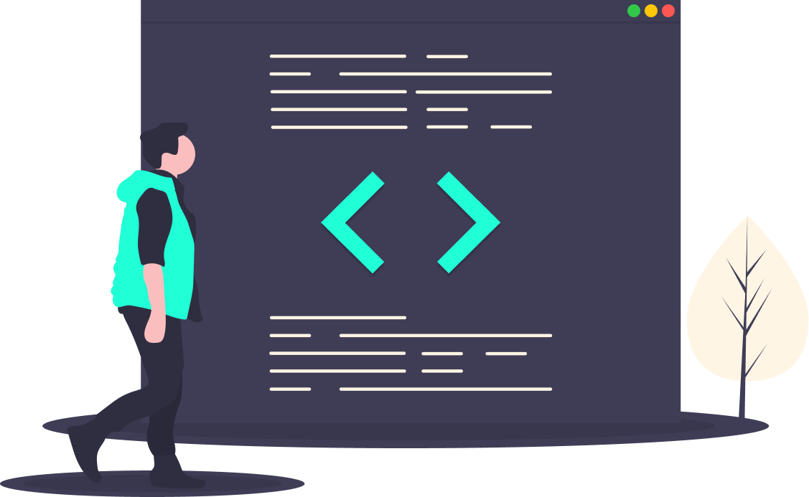

HOLA SOY MIGUEL ATENCIO VARGAS
En este sitio podrá encontrar mis proyectos y el camino de aprendizaje donde comparto todas las experiencias que la comunidad me brindó.
Las areas de aprendizaje fueron:
Desarrollo Web
Programación Competitiva
Estructuras de Datos
GNU/Linux
Matemáticas y Estadística
Inteligencia Artificial
Arquitectura de Sistemas
También tuve que mejorar en habilidades como: